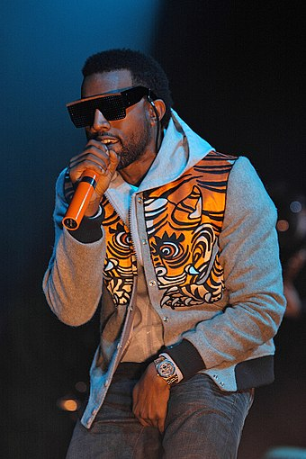

"Kanye" redirects here. For other uses, see Kanye (disambiguation) and Kanye West (disambiguation).
Ye[a] (/jeɪ/ YAY; born Kanye Omari West /ˈkɑːnjeɪ/ KAHN-yay; June 8, 1977) is an American rapper, singer, songwriter, record producer, and fashion designer.[1][2][3][4]
Born in Atlanta and raised in Chicago,[5][6] West gained recognition as a producer for Roc-A-Fella Records in the early 2000s, producing singles for several artists and developing the "chipmunk soul" sampling style. Intent on pursuing a solo career as a rapper, he released his debut studio album, The College Dropout (2004), to critical and commercial success. He founded the record label GOOD Music later that year. West explored diverse musical elements like orchestras, synthesizers, and autotune on the albums Late Registration (2005), Graduation (2007), and 808s & Heartbreak (2008). His fifth and sixth albums My Beautiful Dark Twisted Fantasy (2010) and Yeezus (2013) were also met with critical and commercial success. West further diversified his musical styles on The Life of Pablo (2016) and Ye (2018) and explored Christian and gospel music on Jesus Is King (2019). His tenth album Donda (2021) was released to continued commercial success but mixed critical reception. West's discography also includes the two full-length collaborative albums Watch the Throne (2011) with Jay-Z and Kids See Ghosts (2018) with Kid Cudi.
One of the world's best-selling music artists, with over 160 million records sold, West has won 24 Grammy Awards and 75 nominations, the joint tenth-most of all time, and the joint-most Grammy awards of any rapper along with Jay-Z.[7] Among his other awards are the Billboard Artist Achievement Award, a joint-record three Brit Awards for Best International Male Solo Artist and the Michael Jackson Video Vanguard Award.[8] Six of West's albums were included on Rolling Stone's 2020 500 Greatest Albums of All Time list with the same publication naming him one of the 100 Greatest Songwriters of All Time.[9] He holds the joint record (with Bob Dylan) for most albums (4) topping the annual Pazz & Jop critic poll. Time named him one of the 100 most influential people in the world in 2005 and 2015.[10][11] As a fashion designer, he has collaborated with Nike, Louis Vuitton, Gap, and A.P.C. on clothing and footwear and led the Yeezy collaboration with Adidas. He is also the founder and head of the creative content company Donda.
West's outspoken views have received significant media coverage; he has been a frequent source of controversy due to his conduct on social media[12] and at awards shows and public settings, as well as his comments on the music and fashion industries, U.S. politics, race, and slavery. His Christian faith, high-profile marriage to Kim Kardashian, and mental health have also been topics of media attention.[13][14] In 2020, West launched an unsuccessful independent presidential campaign that primarily advocated for a consistent life ethic. In 2022, he was widely condemned and lost many sponsors and partnerships—including his collaborations with Adidas, Gap, and Balenciaga—after making a series of antisemitic statements.[15][16] In November 2022, he announced his 2024 presidential campaign, appearing publicly with Nick Fuentes, a white supremacist. West later publicly praised Adolf Hitler, denied the Holocaust,[17][18] and identified as a Nazi.[19][20]
West was born on June 8, 1977, in Atlanta, Georgia.[b] After his parents divorced when he was three years old, he moved with his mother to Chicago, Illinois.[23][24] His father, Ray West, is a former Black Panther and was one of the first black photojournalists at The Atlanta Journal-Constitution. Ray later became a Christian counselor,[24] and in 2006, opened the Good Water Store and Café in Lexington Park, Maryland, with startup capital from his son.[25][26] West's mother, Donda C. West (née Williams),[27] was a professor of English at Clark Atlanta University and the Chair of the English Department at Chicago State University before retiring to serve as his manager.
West was raised in a middle-class environment, attending Polaris School for Individual Education[5] in suburban Oak Lawn, Illinois, after living in Chicago.[6] At the age of 10, West moved with his mother to Nanjing, China, where she was teaching at Nanjing University as a Fulbright Scholar.[28] According to his mother, West was the only foreigner in his class, but settled in well and quickly picked up the language, although he has since forgotten most of it.[29] When asked about his grades in high school, West replied, "I got A's and B's."[30]
West demonstrated an affinity for the arts at an early age; he began writing poetry when he was five years old.[31] West started rapping in the third grade and began making musical compositions in the seventh grade, eventually selling them to other artists.[32] West crossed paths with producer No I.D., who became West's friend and mentor.[33]: 557 After graduating from high school, West received a scholarship to attend Chicago's American Academy of Art in 1997 and began taking painting classes. Shortly after, he transferred to Chicago State University to study English. At age 20, he dropped out to pursue his musical career.[34] This greatly displeased his mother, who was also a professor at the university, athough she would later accept the decision.[33]: 558
1996–2002: Early work and Roc-A-Fella
West began his early production career in the mid-1990s, creating beats primarily for burgeoning local artists around his area. His first official production credits came at nineteen when he produced eight tracks on Down to Earth, the 1996 debut album of a Chicago rapper, Grav.[35] In 1998, West was the first person signed to the management-production company Hip Hop Since 1978.[36] For a time, West acted as a ghost producer for Deric "D-Dot" Angelettie. Because of his association with D-Dot, West was not able to release a solo album, so he formed the Go-Getters, a rap group composed of him, GLC, Timmy G, Really Doe, and Arrowstar.[37][38] The Go-Getters released their first and only studio album World Record Holders in 1999.[37] West spent much of the late 1990s producing records for several well-known artists and music groups.[39] He produced the third track on Foxy Brown's second studio album Chyna Doll, which became the first hip-hop album by a female rapper to debut at the top of the U.S. Billboard 200 chart.[39]
In 2000, West began producing for artists on Roc-A-Fella. West is often credited with revitalizing Jay-Z's career with his contributions to Jay-Z's 2001 album The Blueprint,[40] which Rolling Stone ranked among their list of greatest hip-hop albums.[41] Serving as an in-house producer for Roc-A-Fella, West produced music for other artists on the label, including Beanie Sigel, Freeway, and Cam'ron. He also crafted hit songs for Ludacris, Alicia Keys, and Janet Jackson.[40][42] Meanwhile, West struggled to attain a record deal as a rapper.[43] Multiple record companies, including Capitol Records,[32] denied or ignored him because he did not portray the gangsta image prominent in mainstream hip hop at the time.[33]: 556 Desperate to keep West from defecting to another label, then-label head Damon Dash reluctantly signed West to Roc-A-Fella.[33]: 556 [44]
A 2002 car accident, which shattered his jaw,[45][46] inspired West; two weeks after being admitted to the hospital, he recorded "Through the Wire" at the Record Plant Studios with his jaw still wired shut.[45] The song was first available on West's "Get Well Soon ..." mixtape, released in December 2002.[47] At the same time, West announced that he was working on an album called The College Dropout, whose overall theme was to "make your own decisions. Don't let society tell you, 'This is what you have to do.'"[48]
2003–2006: The College Dropout and Late Registration
Main articles: The College Dropout and Late Registration
West recorded the remainder of the album in Los Angeles while recovering from the car accident. It was leaked months before its release date,[43] and West used the opportunity to remix, remaster, and revise the album before its release;[49] West added new verses, string arrangements, gospel choirs, and improved drum programming.[43] The album was postponed three times from its initial date in August 2003,[50][51] and was eventually released in February 2004, reaching No. 2 on the Billboard 200 as his debut single, "Through the Wire" peaked at No. 15 while on the Billboard Hot 100 chart for five weeks.[52] "Slow Jamz", his second single, featuring Twista and Jamie Foxx, became the three musicians' first No. 1 hit. The College Dropout received near-universal critical acclaim, was voted the top album of the year by two major music publications,[which?] and has consistently been ranked among the great hip-hop works and debut albums by artists.[53][54]
"Jesus Walks", the album's fourth single, reached the top 20 of the Billboard pop charts, despite industry executives' predictions that a song containing such blatant declarations of faith would never make it to the radio.[53][54] The College Dropout was certified triple platinum in the US, and garnered West 10 Grammy nominations, including Album of the Year, and Best Rap Album (which it received).[55] During this period, West founded GOOD Music, a record label and management company that housed affiliate artists and producers, such as No I.D. and John Legend,[56] and produced singles for Brandy, Common, Legend, and Slum Village.[57]
West invested $2 million and took over a year to make his second album.[58] West was inspired by Roseland NYC Live, a 1998 live album by English trip hop group Portishead, produced with the New York Philharmonic Orchestra,[59] incorporating string arrangements into his hip-hop production. Though West had not been able to afford many live instruments around the time of his debut album, the money from his commercial success enabled him to hire a string orchestra for his second album Late Registration.[59] West collaborated with American film score composer Jon Brion, who served as the album's co-executive producer for several tracks.[60][61] Late Registration sold over 2.3 million units in the United States alone by the end of 2005 and was considered by industry observers as the only successful major album release of the fall season, which had been plagued by steadily declining CD sales.[62]
When his song "Touch the Sky" failed to win Best Video at the 2006 MTV Europe Music Awards, West went onto the stage as the award was being presented to Justice and Simian for "We Are Your Friends" and argued that he should have won the award instead.[63][64] Hundreds of news outlets worldwide criticized the outburst. On November 7, 2006, West apologized for this outburst publicly during his performance as support act for U2 for their Vertigo concert in Brisbane.[65] He later spoofed the incident on the 33rd-season premiere of Saturday Night Live in September 2007.[66]
2007–2009: Graduation, 808s & Heartbreak, and VMAs incident
Main articles: Graduation (album), 808s & Heartbreak, and Kanye West MTV Video Music Awards controversy
West's third studio album, Graduation, garnered major publicity when its release date pitted West in a sales competition against rapper 50 Cent's Curtis.[67] Upon their September 2007 releases, Graduation outsold Curtis by a large margin, debuting at number one on the U.S. Billboard 200 chart and selling 957,000 copies in its first week.[68] Graduation continued the string of critical and commercial successes by West, and the album's lead single, "Stronger", garnered his third number-one hit.[69] "Stronger", which samples French house duo Daft Punk, has been accredited to not only encouraging other hip-hop artists to incorporate house and electronica elements into their music, but also for playing a part in the revival of disco and electro-infused music in the late 2000s.[70] His mother's death in November 2007[71] and the end of his engagement to Alexis Phifer[72] profoundly affected West, who set off for his 2008 Glow in the Dark Tour shortly thereafter.[73]
Recorded mostly in Honolulu, Hawaii in three weeks,[74] West announced his fourth album, 808s & Heartbreak, at the 2008 MTV Video Music Awards, where he performed its lead single, "Love Lockdown". Music audiences were taken aback by the uncharacteristic production style and the presence of Auto-Tune, which typified the pre-release response to the record.[75] 808s & Heartbreak was released by Island Def Jam in November 2008.[76][77] Upon its release, the lead single "Love Lockdown" debuted at number three on the Billboard Hot 100,[78] while follow-up single "Heartless" debuted at number four.[79] While it was criticized prior to release, 808s & Heartbreak is considered to have had a significant effect on hip-hop music, encouraging other rappers to take more creative risks with their productions.[80]
While Taylor Swift was accepting her award for Best Female Video at the 2009 MTV Video Music Awards, West went on stage and grabbed the microphone from her to proclaim that Beyoncé deserved the award instead. He was subsequently removed from the remainder of the show for his actions.[81][82][83] West was criticized by various celebrities for the outburst,[81][84][85][86] and by President Barack Obama, who called West a "jackass".[87][88][89][90] The incident sparked a large influx of Internet photo memes.[91] West subsequently apologized,[85][92] including personally to Swift.[93][94][95] However, in a November 2010 interview, he seemed to recant his past apologies, describing the act at the 2009 awards show as "selfless".[96][97]
2010–2012: My Beautiful Dark Twisted Fantasy, Watch the Throne, and Cruel Summer
Main articles: My Beautiful Dark Twisted Fantasy, Watch the Throne, and Cruel Summer (GOOD Music album)
Following the highly publicized incident, West took a brief break from music and threw himself into fashion, only to hole up in Hawaii for the next few months writing and recording his next album.[98] Importing his favorite producers and artists to work on and inspire his recording, West kept engineers behind the boards 24 hours a day and slept only in increments. Noah Callahan-Bever, a writer for Complex, was present during the sessions and described the "communal" atmosphere as thus: "With the right songs and the right album, he can overcome any and all controversy, and we are here to contribute, challenge, and inspire."[98] A variety of artists contributed to the project, including close friends Jay-Z, Kid Cudi and Pusha T, as well as off-the-wall collaborations, such as with Justin Vernon of Bon Iver.[99]
My Beautiful Dark Twisted Fantasy, West's fifth studio album, was released in November 2010 to widespread acclaim from critics, many of whom considered it his best work and said it solidified his comeback.[100] In stark contrast to his previous effort, which featured a minimalist sound, Dark Fantasy adopts a maximalist philosophy and deals with themes of celebrity and excess.[56] The record included the international hit "All of the Lights", and Billboard hits "Power", "Monster", and "Runaway",[101] the latter of which accompanied a 35-minute film of the same name directed by and starring West.[102] During this time, West initiated the free music program GOOD Fridays through his website, offering a free download of previously unreleased songs each Friday, a portion of which were included on the album. This promotion ran from August to December 2010.[103] Dark Fantasy went on to go platinum in the United States,[104] but its omission as a contender for Album of the Year at the 54th Grammy Awards was viewed as a "snub" by several media outlets.[105]
2011 saw West embark on a festival tour to commemorate the release of My Beautiful Dark Twisted Fantasy performing and headlining numerous festivals including; SWU Music & Arts, Austin City Limits, Oya Festival, Flow Festival, Live Music Festival, The Big Chill, Essence Music Festival, Lollapalooza and Coachella which was described by The Hollywood Reporter as "one of greatest hip-hop sets of all time",[106] West released the collaborative album Watch the Throne with Jay-Z in August 2011. By employing a sales strategy that released the album digitally weeks before its physical counterpart, Watch the Throne became one of the few major label albums in the Internet age to avoid a leak.[107][108] "Niggas in Paris" became the record's highest-charting single, peaking at number five on the Billboard Hot 100.[101] The co-headlining Watch the Throne Tour kicked off in October 2011 and concluded in June 2012.[109] In 2012, West released the compilation album Cruel Summer, a collection of tracks by artists from West's record label GOOD Music.
2013–2015: Yeezus and the Yeezus Tour
Main articles: Yeezus and The Yeezus Tour
Sessions for West's sixth solo effort begin to take shape in early 2013 in his own personal loft's living room at a Paris hotel.[110] Determined to "undermine the commercial",[111] he once again brought together close collaborators and attempted to incorporate Chicago drill, dancehall, acid house, and industrial music.[112] Primarily inspired by architecture,[110] West's perfectionist tendencies led him to contact producer Rick Rubin fifteen days shy of its due date to strip down the record's sound in favor of a more minimalist approach.[113] Initial promotion of his sixth album included worldwide video projections of the album's music and live television performances.[114][115] Yeezus, West's sixth album, was released June 18, 2013, to rave reviews from critics.[116] It became his sixth consecutive number one debut, but also marked his lowest solo opening week sales.[117]
In September 2013, West announced he would be headlining his first solo tour in five years, to support Yeezus, with fellow American rapper Kendrick Lamar accompanying him as a supporting act.[118][119] The tour was met with rave reviews from critics.[120] Rolling Stone described it as "crazily entertaining, hugely ambitious, emotionally affecting (really!) and, most importantly, totally bonkers".[120] Writing for Forbes, Zack O'Malley Greenburg praised West for "taking risks that few pop stars, if any, are willing to take in today's hyper-exposed world of pop", describing the show as "overwrought and uncomfortable at times, but [it] excels at challenging norms and provoking thought in a way that just isn't common for mainstream musical acts of late".[121] West subsequently released a number of singles featuring Paul McCartney, including "Only One"[122] and "FourFiveSeconds", also featuring Rihanna.[123]
In November 2013, West stated that he was beginning work on his next studio album, hoping to release it by mid-2014,[124] with production by Rick Rubin and Q-Tip.[125] Having initially announced a new album entitled Yeezus II slated for a 2014 release, West announced in March 2015 that the album would instead be tentatively called So Help Me God.[126] In May 2015, West was awarded an honorary doctorate by the School of the Art Institute of Chicago for his contributions to music, fashion, and popular culture.[127][128] The next month, West headlined at the Glastonbury Festival in the UK, despite a petition signed by almost 135,000 people against his appearance.[129] Another petition aimed to block West from headlining the 2015 Pan American Games, garnering 50,000 supporters.[130]
2019–present: Jesus Is King, Donda, and Donda 2
Main articles: Jesus Is King, Donda, and Donda 2
On January 6, 2019, West started his weekly "Sunday Service" orchestration which includes soul variations of both West's and others' songs attended by multiple celebrities including the Kardashians, Charlie Wilson, and Kid Cudi.[174] West previewed a new song, "Water" at his "Sunday Service" orchestration performance at Coachella 2019,[175] which was later revealed to feature on his upcoming album Jesus Is King;[176] West released the album on October 25, 2019.[177] It became the first to ever top the Billboard 200, Top R&B/Hip-Hop Albums, Top Rap Albums, Top Christian Albums and Top Gospel Albums at the same time.[178] On December 25, 2019, West and Sunday Service released Jesus Is Born, containing 19 songs including several re-workings of older West songs.[179]
West released a single titled "Wash Us in the Blood" on June 30, 2020, featuring fellow American rapper and singer Travis Scott, along with the music video, which was set to serve as the lead single from his tenth studio album Donda.[180] However, in September 2020, West stated that he would not be releasing any further music until he is "done with [his] contract with Sony and Universal".[181] On October 16, he released the single "Nah Nah Nah".[182] West held several listening parties at Mercedes-Benz Stadium for his upcoming album Donda in the summer of 2021, where he had taken up temporary residence in one of the stadium's locker rooms, converting it into a recording studio to finish the recording.[183][184] After multiple delays, Donda was released on August 29, 2021.[185] West claimed the album was released early without his approval and alleged that Universal had altered the tracklist.[186] He released a delux edition of Donda, including five new songs, to streaming services on November 14, 2021.[187] On November 20, days after ending their long-running feud,[188] West and rapper Drake confirmed that they would stage the "Free Larry Hoover" benefit concert on December 9 at the Los Angeles Memorial Coliseum.[189]
On January 5, 2022, West was announced as one of the 2022 headliners of Coachella Valley Music and Arts Festival.[190] Later that month on January 15, West released the first single for his upcoming album Donda 2, "Eazy" featuring The Game,[191] to be executive produced by American rapper Future.[192] West hosted a listening event for the album at LoanDepot Park in Miami, Florida, on February 22.[193] In April, shortly before Coachella, West pulled out as headlining act,[194] then proceeded to pull out of headlining Rolling Loud.[195] West and The Game performed the single on July 22, marking West's first performance in five months following the low profile he had been keeping since Donda 2 remained unfinished.[196] A day later, despite cancelling as headliner, he appeared at Rolling Loud during Lil Durk's set.[197]
In December 2022, after weeks of controversial anti-Semitic statements, West released a new song "Someday We’ll All Be Free" on his Instagram.[198]
West's musical career is defined by frequent stylistic shifts and different musical approaches.[199] In the subsequent years since his debut, West has both musically and lyrically taken an increasingly experimental approach to crafting progressive hip hop music while maintaining accessible pop sensibilities.[200][201][202] Ed Ledsham of PopMatters said that "West's melding of multiple genres into the hip-hop fold is a complex act that challenges the dominant white notions of what constitutes true 'art' music."[203] West's rhymes have been described as funny, provocative and articulate, capable of seamlessly segueing from shrewd commentary to comical braggadocio to introspective sensitivity.[204] West imparts that he strives to speak in an inclusive manner so groups from different racial and gender backgrounds can comprehend his lyrics, saying he desired to sound "just as ill as Jadakiss and just as understandable as Will Smith".[205] Early in his career, West pioneered a style of hip-hop production dubbed "chipmunk-soul",[206][207] a sampling technique involving the manipulation of tempo in order to chop and stretch pitched-up samples from vintage soul songs.[208][1]
On his debut studio album, The College Dropout (2004), West formed the constitutive elements of his style, described as intricate hip-hop beats, topical subject matter, and clumsy rapping laced with inventive wordplay.[200][209] The record saw West diverge from the then-dominant gangster persona in hip hop in favor of more diverse, topical lyrical subjects,[210] including higher education, materialism, self-consciousness, minimum-wage labor, institutional prejudice, class struggle, family, sexuality, his struggles in the music industry, and middle-class upbringing.[211][212][201] Over time, West has explored a variety of music genres, encompassing and taking inspiration from chamber pop on his second studio album, Late Registration (2005),[60] arena rock and europop on his third album, Graduation (2007),[213][214] synth-driven electropop on his fourth album, 808s & Heartbreak (2008),[215][216] acid-house, drill, industrial rap and trap on Yeezus (2013),[112][217] gospel and Christian rap on The Life of Pablo (2016), Jesus is King (2019) and Donda (2021),[218][219][220][221] and psychedelic music on Kids See Ghosts (2018).[222]